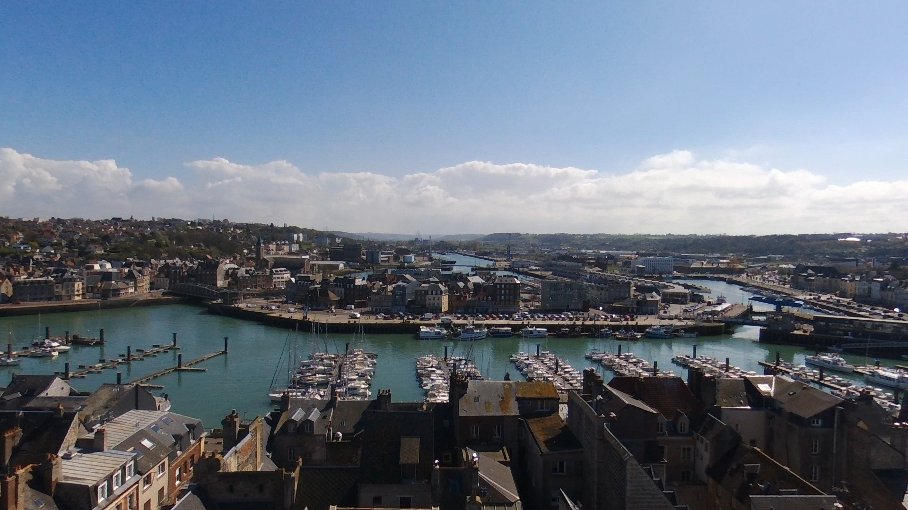

Quelques images
Quelques photos prises avec mon ami Simon.
Alpes-Vosges-Dieppe

Je m'appelle Jean Godard je vis à Dieppe et j'étudie à Pablo Neruda.
Je me passionne pour les métiers du web, ainsi que la vidéo en général.
J'aime tout particulièrement le pilotage et de même la photographie par drone.
J'aime regarder des films et voir comment les différents plans sont réalisés, ainsi que les émotions et atmosphères que ceux-ci peuvent dégager, ce qui permet de développer ma créativité.
Je suis assez polyvalent car je peux réaliser un grand nombre d'activités sans me lasser.
Le projet que j'ai réalisé permet de vous montrer ma détermination vis-à-vis du web et de l'audiovisuel.
Le montage a été produit sur sony vegas 15, bien que je me sente plus à l'aise sur adobe première.
Mathématiques
SIN
Anglais
ETLV1
Physique-chimie
ETT
Allemand
Sport
HTML5
CSS
Adobe Première (En cours)
JavaScrit (En cours)
PHP (En cours)
Photoshop (En cours)
Quelques photos prises avec mon ami Simon.